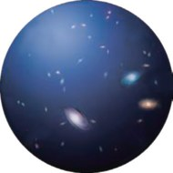
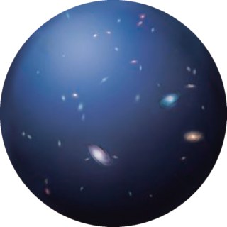

팽창하는 우주
우주에는 태양계가 속해 있는 우리은하를 포함해 무수히 많은 은하가 있습니다. 허블은 우리은하 밖의 외부 은하를 관측하여 이들 사이의 거리가 점점 멀어진다는 것을 알아냈습니다.
이 단원에서 나는
- 모형을 이용하여 우주가 팽창하고 있음을 설명할 수 있다.
도입 은하 사이의 거리가 멀어지는 까닭은?
은하 B : “나도 은하 A가 지난번보다 멀어졌어. 그런데 왜 너와의 거리도 점점 멀어지는 것 같지?”
은하와 은하 사이의 거리가 멀어지는 까닭은 무엇일까요?
거리가 멀어지는 이유는 은하가 스스로 움직이고 있기 때문일 수도 있고, 우주 공간 자체가 팽창하고 있기 때문일 수도 있습니다. 하지만 수많은 은하가 대부분 멀어지는 방향으로 움직이고 있다고 설명하는 것은 무리가 있으므로, 우주 공간 자체가 팽창하고 있다는 것으로 그 까닭을 설명할 수 있습니다.
과학자 · 허블(Hubble, E. P., 1889~1953) 미국의 천문학자, 외부 은하의 존재를 알아냈다.
개념 1 풍선 모형으로 보는 우주 팽창 교과서 298쪽
풍선 표면을 우주 공간, 붙임딱지를 은하라고 생각해 봅시다. 풍선을 불면 붙임딱지 사이의 거리가 어떻게 변할까요?
풍선 모형 — 직접 불어 보기
풍선 표면 = 우주 공간 · 붙임딱지 = 은하여기까지 정리
- 풍선을 불면 1↔2는 2 cm → 3 cm로, 1↔3은 4 cm → 6 cm로 늘어난다. 즉 처음에 더 멀리 있던 것이 더 많이 멀어진다.
- 어느 붙임딱지를 기준으로 보아도 다른 붙임딱지는 모두 멀어진다. → 팽창의 중심이 없다.
- 마찬가지로 우주 공간이 팽창함에 따라 은하 사이의 거리가 멀어지고 있다.
개념 2 우주에는 중심이 없다 교과서 299쪽
풍선 표면이 팽창할수록 붙임딱지 사이의 거리는 멀어집니다. 이와 마찬가지로 관측된 외부 은하들 사이의 거리가 멀어지는 것은 우주 공간이 팽창하고 있기 때문입니다. 또한 팽창하는 풍선 표면에 중심이 없는 것처럼 팽창하는 우주에도 중심이 없습니다.
| 그림 12 | 팽창하는 우주 모형 — 시간을 되돌려 보자
슬라이더를 왼쪽으로 옮기면 과거로 갑니다

약 138억 년 전
팽창하고 있는 우주의 시간을 과거로 되돌린다면 우주의 크기는 점점 작아질 것입니다. 이를 바탕으로 과학자들은 우주가 약 138억 년 전에 탄생하였고, 점점 팽창하여 현재의 모습이 되었다고 설명합니다.
건포도빵으로 비유하면
오븐에서 부풀어 오르는 건포도빵에서 건포도는 은하, 빵 반죽은 우주 공간입니다. 반죽이 부풀면 건포도 사이의 거리가 서로 멀어집니다.
기억할 세 가지
- 외부 은하들은 서로 멀어지고 있다.
- 팽창하는 우주에는 특별한 중심이 없다.
- 멀리 있는 은하일수록 더 빠르게 멀어진다.
정리 핵심 정리
- 외부 은하 : 우리은하 밖의 은하
- 풍선 모형 : 풍선 표면을 우주 공간, 붙임딱지를 은하라고 했을 때, 풍선 표면이 커짐에 따라 붙임딱지 사이의 거리가 멀어짐을 알 수 있다.
- 팽창하는 우주 : 외부 은하들의 거리가 서로 멀어지고 있다. 팽창하는 우주에는 중심이 없다.
- 우주는 약 138억 년 전에 탄생하였고, 점점 팽창하여 현재의 모습이 되었다.
확인 이것만은 & 문제로 확인
학생 A : 은하와 은하 사이의 거리는 점점 멀어져.
학생 B : 풍선 위에 붙인 붙임딱지는 은하를 비유한 것이야.
학생 C : 팽창하는 우주의 중심은 우리은하야.
스스로 정리하기
과학자들은 우리은하 밖의 은하들이 서로 멀어지고 있음을 관측하여 우주가 ㅍ ㅊ하고 있음을 알아냈다.